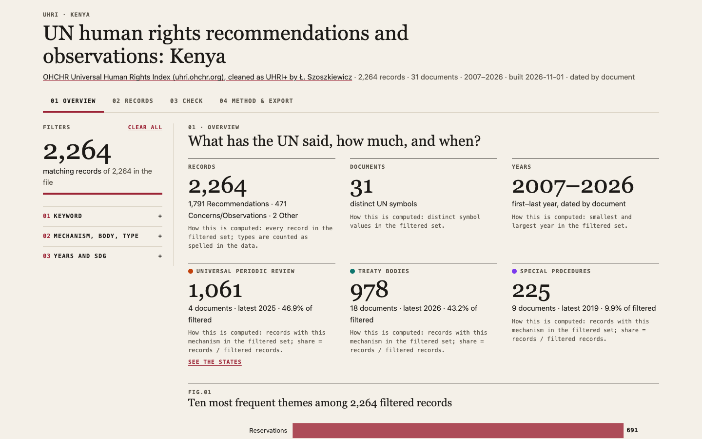
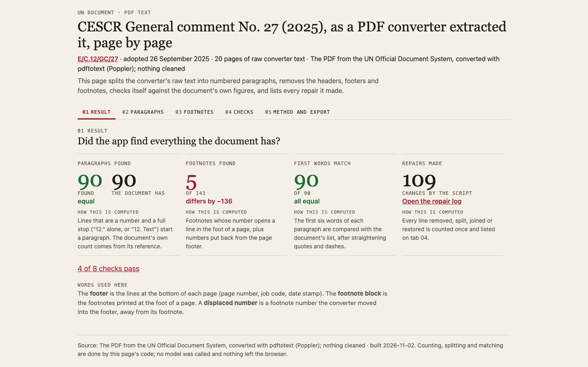
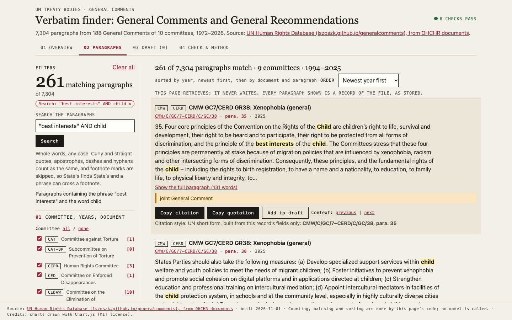
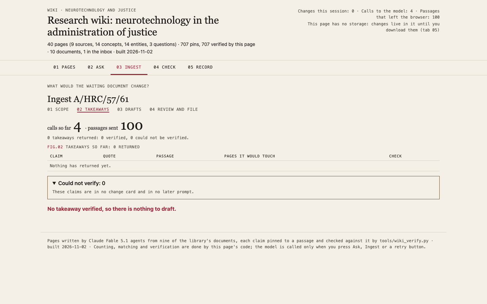
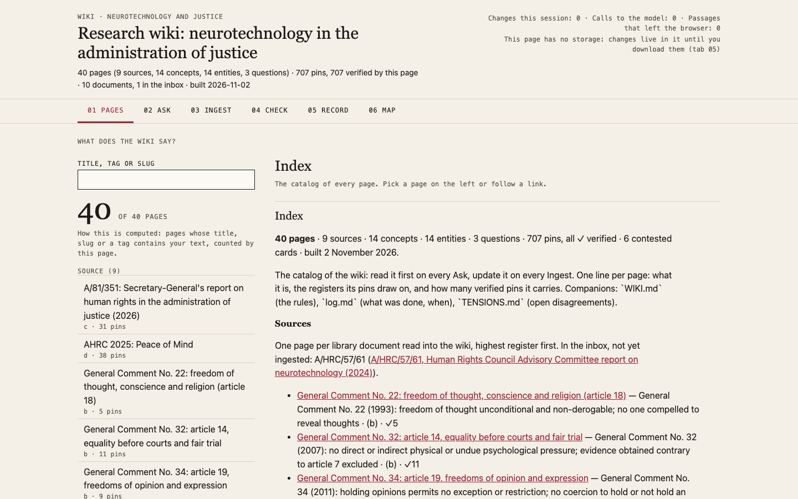

Run 2026-11-03-tabs-sonnet. Country: Kenya. Click a screenshot to open the app.
| Claude Sonnet 5.5 · USA · Amazon Bedrock | |
|---|---|
| s7-1-dashboard |  8/8 · None s · $0.000 · 933 lines all checks passed |
| s7-4-extract |  6/7 · None s · $0.000 · 616 lines text_matches |
| s8-1-verbatim |  8/8 · None s · $0.000 · 655 lines all checks passed |
| s8-5-wiki |  7/7 · None s · $0.000 · 782 lines all checks passed |
| s8-6-wiki-map |  6/6 · None s · $0.000 · 918 lines all checks passed |